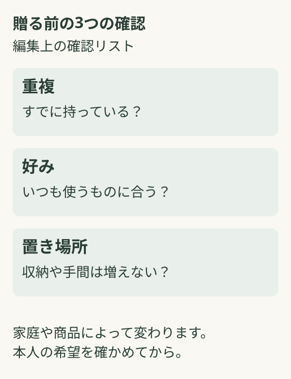

贈り物の使いやすさは、家庭によって変わります。ここでは「いらないもの」を順位で決めず、選ぶ前に確認したい点と代替案を整理します。

すでに持っているか
服、おくるみ、おもちゃ、食器は、親族からの贈り物やお下がりと重なる可能性があります。「おくるみは足りている？」のように、品物を具体的に挙げて聞いてみましょう。
足りているなら、本人が使う消耗品やギフトカードも候補になります。消耗品も、商品名と希望する量を確認してから。
好みや使い方に合うか
服はサイズだけでなく、季節や着せやすさも確認します。哺乳瓶やマグは、使っている製品や欲しい製品が分かっているときに選びましょう。
肌に使うものは、本人が希望する製品を確認してから。別のスキンケア用品や洗剤を「誰にでも安心な代わり」として勧めることはできません。
置き場所と手間は増えないか
大きなぬいぐるみ、バウンサー、ベビージムなどは、設置場所や収納場所が必要です。記念キットも、作業する時間を取れるかで使いやすさが変わります。
物を増やしたくない家庭なら、希望する店のギフトカードや、本人が望む体験のチケットを検討できます。チケットは、期限と予約条件を確認しましょう。
贈る前の聞き方
「今足りないものはある？」「服なら欲しいサイズと季節を教えて」「大きいものは置けそう？」。短く聞くだけでも、選ぶ手がかりになります。サプライズにしたい場合は、品物を決める前に希望のジャンルだけ聞く方法もあります。
よくある質問
希望を聞くとサプライズになりませんか？
品物を決める前に、欲しいジャンルや避けたいものだけ聞く方法もあります。相手が答えやすい範囲で確認しましょう。
希望が分からない場合は？
大きいものや肌に使うものをこちらだけで決めず、本人が使う店のギフトカードなども含めて相談できます。利用条件や期限は購入前に確認しましょう。
文・図解：本音カタログ編集部この記事は編集上の確認リストです。口コミ件数や取材記録を確認できていないため、人気・不人気の順位や実在の人物のコメントは掲載していません。